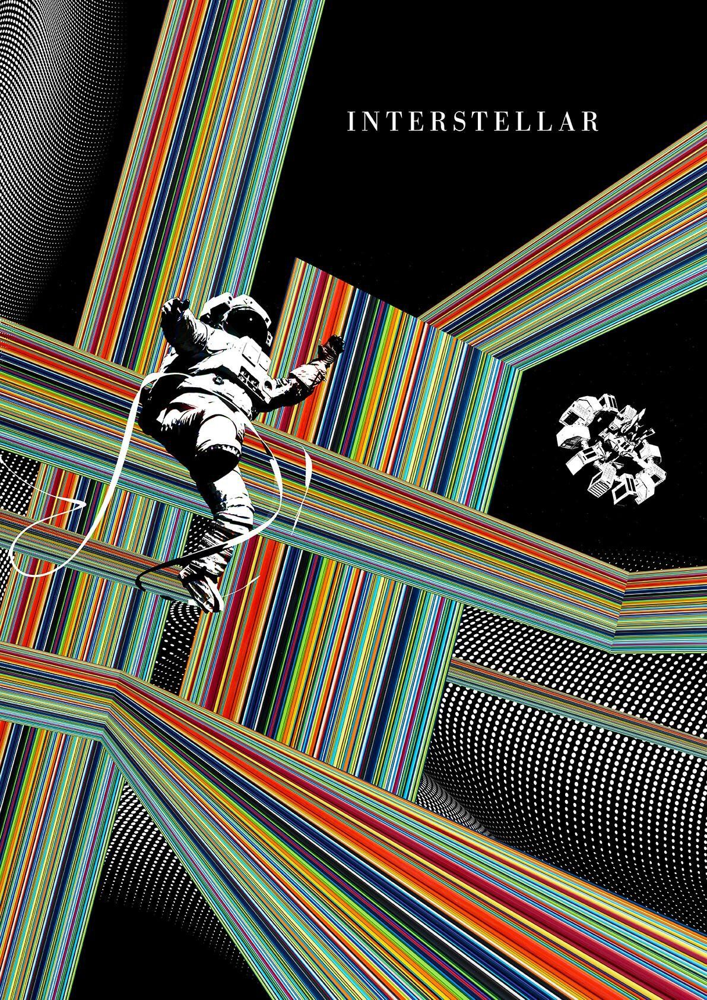

Anusha Nandy
I'm a Data & AI Engineer working at the intersection of data engineering, machine learning, and generative AI.
I like building things that are actually useful. Most of my work sits somewhere between messy real-world data, machine learning, and the engineering it takes to make a system reliable.

About
I'm finishing my M.S. in Data Science, and I'm most interested in the part where ideas stop being experiments and start becoming real systems people can use.
I enjoy working across the stack, from cleaning and moving data to training models to figuring out how to ship something without it falling apart in production. Lately that has meant a mix of data engineering, machine learning, and generative AI.
What I like most is taking a vague or messy problem and turning it into something practical. That could be a better pipeline, a model that helps people make decisions faster, or agentic AI that removes repetitive work.
Technical Expertise
Agentic AI & LLMs
Multi-agent orchestration with LangGraph, LangChain, CrewAI, RAG pipelines, vector databases, tool use, MCP, prompt engineering and LLM evaluation
AI/ML Engineering
Python, PyTorch, Scikit-learn, NLP, classification, forecasting, FastAPI for model serving
MLOps & Deployment
MLflow, Docker, CI/CD basics, AWS and GCP for cloud-hosted models and pipelines
Data Engineering
Snowflake, BigQuery, PostgreSQL, ETL pipelines, data modeling, Power BI dashboards